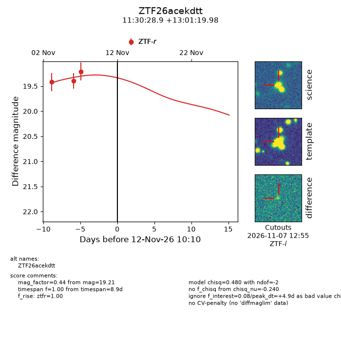
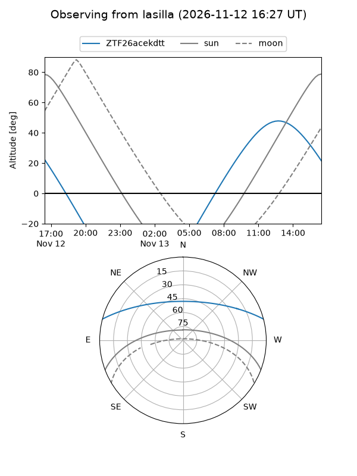
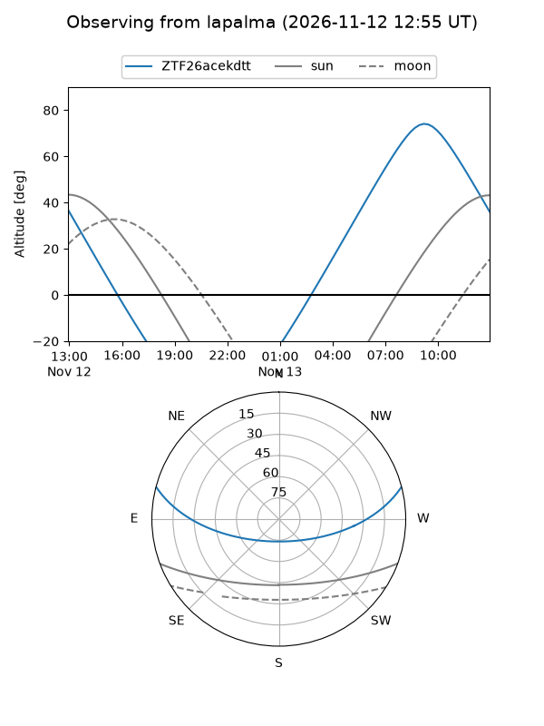
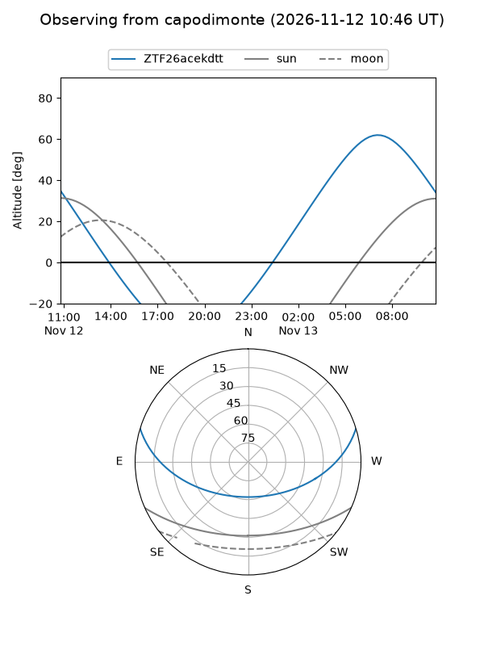

ZTF26acekdtt
Target ZTF26acekdtt at 2026-11-12 21:42
Aliases and brokers:
FINK-ZTF: ztf.fink-portal.org/ZTF26acekdtt
Lasair-ZTF: lasair-ztf.lsst.ac.uk/objects/ZTF26acekdtt
ALeRCE-ZTF: alerce.online/object/ZTF26acekdtt
Direct TNS query: direct search
alt names
ZTF26acekdtt (ztf,fink_ztf)
Coordinates:
equatorial (ra, dec) = 172.6204,+13.02222
equatorial (HMS+DMS) = 11:30:28.90,+13:01:19.98
galactic (l, b) = (245.6212,+66.39235)
Flags:
peak dt: +5.4
Photometry:
last ztfr=19.21
3 ztfr detections
Lightcurve

Visibility



Additional plots